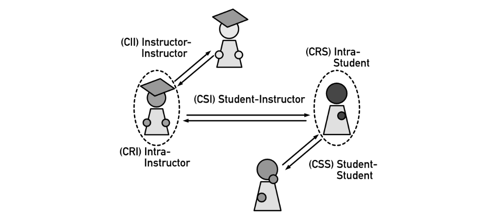
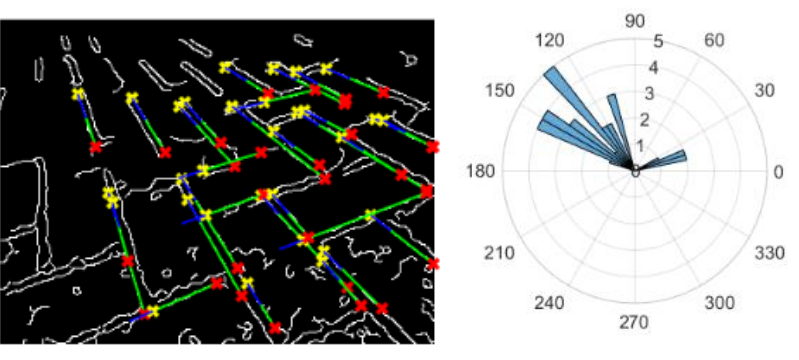

Reinforcement learning for HVAC energy optimization
Summer 2024 at Olin with Prof Victoria Dean. Poster online. ↗

DualGuard MPPI: A novel control algorithm co-optimizing performance & safety
Summer 2023 at USC with Prof Somil Bansal. Preprint online. ↗
Distributed IOT sensor networks for climate change-resilient plumbing
Fall '23 - Spring '24. Senior capstone with Semtech. ↗

Trajectory generation with nonlinear optimization for optimal polecart swingup
Spring 2023. Project on Github. ↗

Localizing a robot with a particle filter (and probability theory)
Fall 2022. Project on Github. ↗

Levitating magnets with linear control theory
Spring 2022. *Under construction!*
Building a ROS-inspired message-passing system from scratch in pure C
Spring 2024. Project on Github. ↗
Teaching scientific computing by simulating a meme epidemic
Summer-Fall '22 with Prof Zach del Rosario. Published @ ASEE. ↗

Introducing the engineering process to 4th graders with custom activities
Spring 2023. Poster online. ↗
Practicing & theorizing how best to teach studio-style technical courses
Fall 2023 with Prof Zach del Rosario. Published @ ASEE. ↗
Building a ball matrix display that prints pixel art with marbles
Fall 2021. Project website online. ↗
Improving mobility devices for people with disabilities in Tanzania
Summer 2021. Kyaro Assistive online. ↗
Using computer vision to navigate a robot in a GPS-denied environment
Spring 2021. Report online. ↗
Generating "clickbait" thumbnails with a GAN (poorly) (before AI was cool 😎)
Spring 2019. Project on Github. ↗